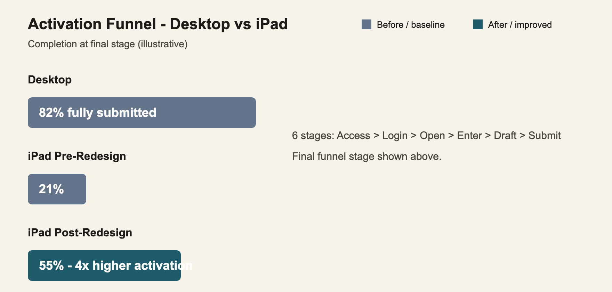
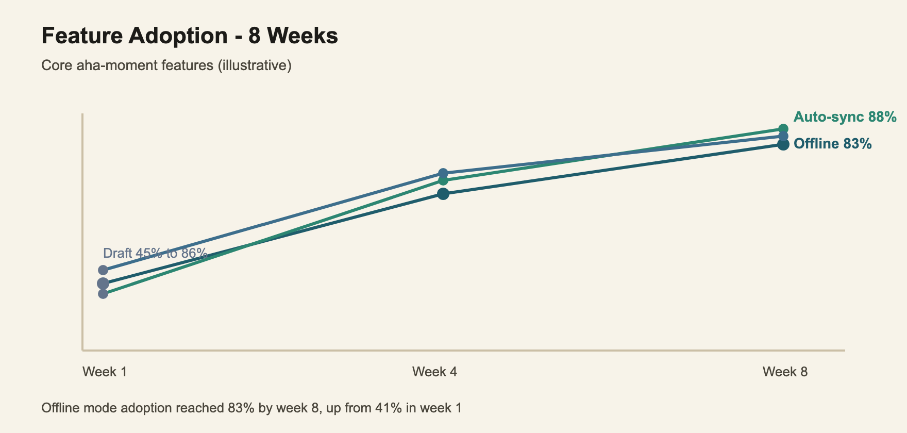
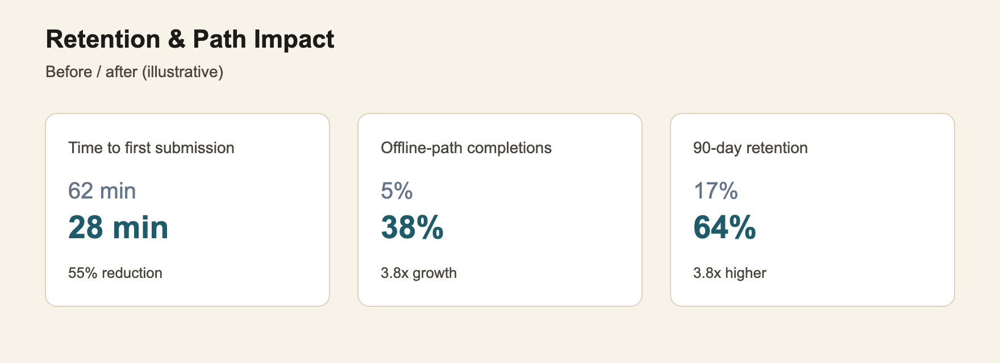

PHASE 2
Portfolio learning exercise — illustrative data, not collected from or delivered to the client. Builds on the real Phase 1 redesign.
A better usability score didn't prove the redesign had actually taken hold.

funnel diagram
4× higher activation rate at final funnel stage 21% → 55%
3.8× higher 90-day retention 17% → 64%
Business Objective
Determine whether the redesign's usability gains translated into sustained adoption over time, not just a one-time completion spike.
Business Challenges
- A higher completion rate didn't confirm the feature people needed most — offline mode — was actually being adopted
- No visibility into exactly where assessors dropped off, pre- vs. post-redesign
- Sustained usage over 30–90 days was unproven
Approach
Activation & Funnel Analysis · Feature Adoption Tracking · Retention Modelling
What Changed
- Mapped the full activation funnel Traced 6 stages from access to submission to find exactly where users dropped off.
- Defined activation as two valid paths Single-session and offline draft-to-sync completion both count as success.
-
Tracked feature adoption weekly
Measured offline mode, auto-sync, and draft save adoption over an 8-week ramp.

-
Modeled 90-day retention
Measured sustained submission behavior, not just first-time completion.

- Reframed the core health metric Completion rate replaced logins and time-in-app as the primary signal.
Transformation Scale
6-stage funnel instrumented
3 core features tracked for adoption
8-week adoption curve modeled
A measurable framework for whether field access actually became field usage.
Business Impact
- 4× activation rate vs. pre-redesign — 21% → 55% at final funnel stage
- 3.8× growth in offline-path completions — 5% → 38% of completions
- 3.8× higher 90-day retention — 17% → 64% sustained submission rate
- Offline mode adoption reached 83% by week 8, up from 41% in week 1
- Completion rate established as the core product health metric